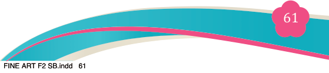
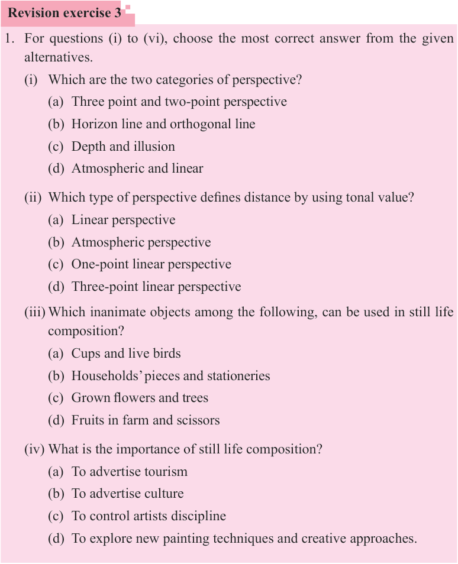
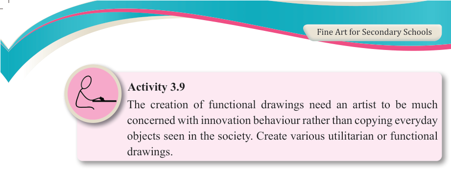

Activity 3.9
The creation of functional drawings need an artist to be much concerned with innovation behaviour rather than copying everyday objects seen in the society. Create various utilitarian or functional drawings.
Revision exercise 3
1. For questions (i) to (vi), choose the most correct answer from the given alternatives.
(i) Which are the two categories of perspective?
(a) Three point and two-point perspective
(b) Horizon line and orthogonal line
(c) Depth and illusion
(d) Atmospheric and linear
(ii) Which type of perspective defines distance by using tonal value?
(a) Linear perspective
(b) Atmospheric perspective
(c) One-point linear perspective
(d) Three-point linear perspective
(iii) Which inanimate objects among the following, can be used in still life composition?
(a) Cups and live birds
(b) Households’ pieces and stationeries
(c) Grown flowers and trees
(d) Fruits in farm and scissors
(iv) What is the importance of still life composition?
(a) To advertise tourism
(b) To advertise culture
(c) To control artists discipline
(d) To explore new painting techniques and creative approaches.